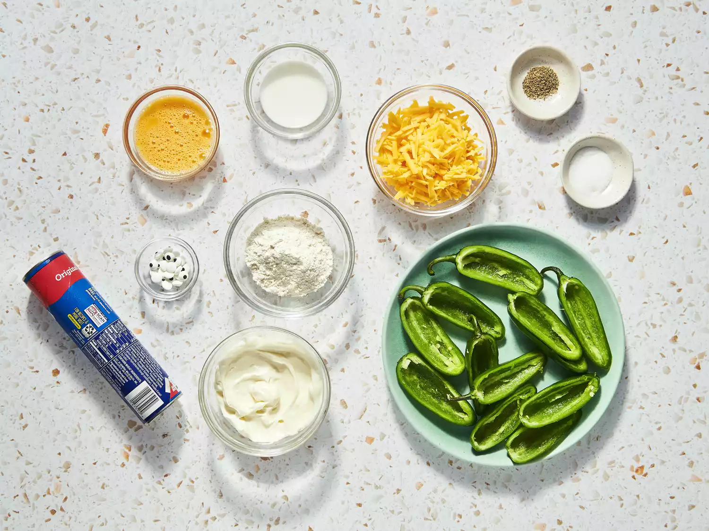

These baked Halloween jalapeno popper mummies are easy to make and taste delicious.
Gather all ingredients. Preheat oven to 350 degrees F (175 degrees C). Line a baking sheet with parchment paper.
Combine cream cheese and Cheddar cheese in a bowl and season filling with salt and pepper. Spoon filling into jalapeno halves.

Combine cream cheese and Cheddar cheese in a bowl and season filling with salt and pepper. Spoon filling into jalapeno halves.
Bake in the preheated oven until dough is lightly browned, 15 to 20 minutes.
Remove from baking sheet and stick candy eyeballs in melted cheese.